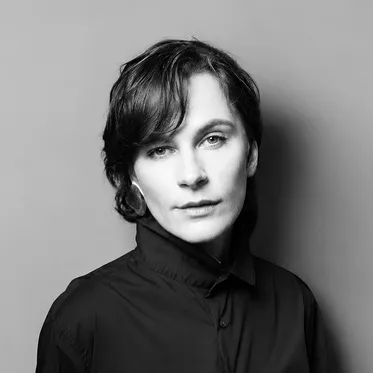
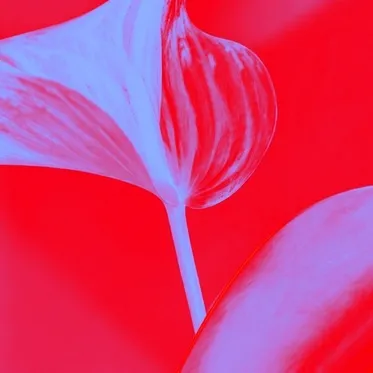

jekaterina kanevskaja
Project Coordinator
Creative Industries · Cultural and Educational Projects · Events and Brand Activations · Communication and Digital
Between things, there are more possibilities than boundaries


Project Coordinator
Creative Industries · Cultural and Educational Projects · Events and Brand Activations · Communication and Digital
Between things, there are more possibilities than boundaries

